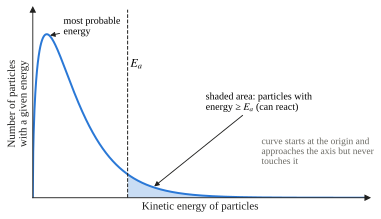
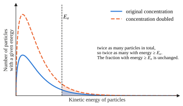
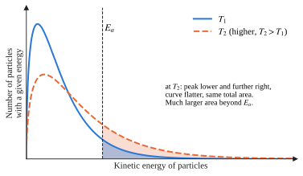
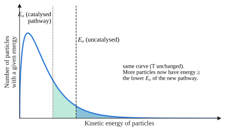
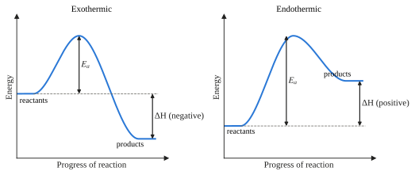
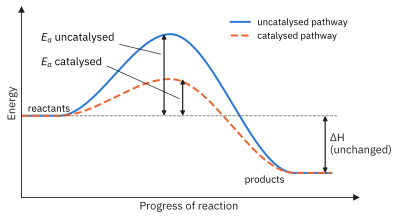
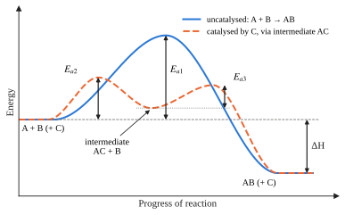
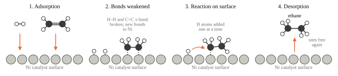
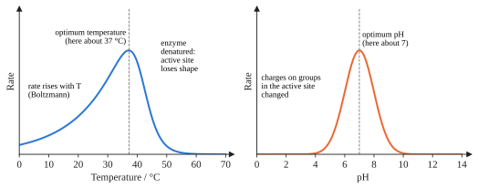
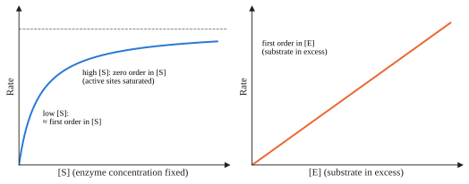

Topic 8 · Reaction Kinetics Part 2
Reaction Kinetics 2
On this page
Kinetics
Kinetics is the study of reaction rates and the factors which influence them. There is a wide diversity in the rates of chemical reactions.
| Speed | Examples |
|---|---|
| Very fast | Explosions; neutralisation, H+(aq) + OH−(aq) → H2O(l); precipitation, Ag+(aq) + Cl−(aq) → AgCl(s) |
| Fast | Magnesium and dilute acid |
| Slow | Many organic reactions at room temperature, such as esterification (which is why we heat under reflux) |
| Very slow | Rusting |
The collision theory
The collision theory assumes that before two chemicals can react together to form products, the particles involved must collide. During this collision bonds are broken or made, resulting in the rearrangement of the atoms present and the formation of products.
Collisions that result in the formation of products are said to be effective collisions. Only a fraction of the collisions that occur result in the formation of products, because for a collision to be effective the particles must:
- collide with energy equal to or greater than the activation energy, and
- collide in the correct orientation.
Activation energy
The activation energy, Ea, is the minimum energy that colliding particles must possess for a reaction to take place.1 Collisions with energy equal to or greater than Ea result in bonds being broken and reaction occurring. If the energy is insufficient, the particles simply bounce apart without reacting.
Factors affecting the rate of reaction
The rate of reaction is affected by the factors below. Note that only a catalyst changes the activation energy, and it does so by providing a different reaction pathway. The other factors change how often the particles collide, or what fraction of them have enough energy.
- The nature of the reactants. The particles must approach one another in the correct orientation for a reaction to take place on collision. This is called the steric factor. Reactions between oppositely charged ions in solution are usually very rapid, as they have a small activation energy and are not hindered by steric factors. Reactions between organic molecules can have high activation energies, and the orientation of the molecules is critical during collision.
- The size of the particles of a solid reactant. If one of the reactants is powdered, a larger surface area is created. This means that there will be more frequent collisions between reacting particles and a greater number of effective collisions per unit time, giving a faster reaction rate.
- The concentration of reactants in solution. Increasing the concentration of reactants means there will be more particles in a given volume. Collisions become more frequent (a higher collision frequency), so there are more effective collisions per unit time and a faster rate. For gases, increasing the pressure has the same effect, since it increases the number of particles in a given volume.
- The temperature at which the reaction is carried out. At higher temperatures the reacting particles have more kinetic energy and move faster, so they collide more often. More importantly, a much greater proportion of the collisions have energy equal to or greater than Ea. The rate constant, k, increases, and so does the rate.2
- The addition of a catalyst. A catalyst is a substance that increases the rate of a chemical reaction without itself being used up. It provides an alternative reaction pathway with a lower activation energy. More particles now have energy equal to or greater than this lower Ea, so there are more effective collisions and k increases.
- The presence of light. Some reactions which take place slowly in the dark are much more rapid when exposed to light. Light provides the energy to break bonds, for example the homolytic fission of Cl–Cl that starts the free-radical substitution of methane (Topic 11).
The Boltzmann distribution
The molecules of a gas are continually colliding with each other and in the process speeding up and slowing down. At any particular instant the molecules show a range of energies, from almost zero to very high. This range is represented by the Boltzmann distribution, which shows the distribution of molecular energies in a gas at a given temperature.

- The area under the curve represents the total number of particles.
- The curve starts at the origin: no particles have zero energy.
- The curve is not symmetrical. It approaches the energy axis but never touches it: there is no maximum energy.
- The average (mean) energy of all the molecules is to the right of the peak (the most probable energy).
- Only the particles in the shaded area, with energy ≥ Ea, can react on collision.
Effect of concentration on the curve
At a given temperature only a fixed proportion of the molecules have the necessary energy for reaction, given by the activation energy Ea. If the total number of molecules is increased by increasing the concentration, the same proportion of molecules have sufficient energy. However, the total number of molecules has increased, so there are more molecules with energy ≥ Ea, collisions are more frequent, and the rate of reaction is faster.

Effect of temperature on the curve
The observed increase in reaction rate with temperature rise is partly due to more frequent collisions, as the particles move faster. However, the increase is due mainly to the increased number of particles that possess energy ≥ Ea.

At the higher temperature, T2, the curve is flatter and the peak is lower and moves to the right, as more molecules have more energy. The area under the curve is unchanged, since the number of particles is the same. The area beyond Ea is much larger, so the proportion of molecules with energy ≥ Ea increases. The rate constant, and hence the rate, increases.
Effect of a catalyst on the curve
A catalyst speeds up a chemical reaction by providing an alternative route with a lower activation energy. The increase in reaction rate is again due to the increased number of particles that possess enough energy (note: the same idea as temperature).

On the Boltzmann distribution, this is shown by the lower position of Ea for the catalysed pathway. Since the energy requirement is lower, the proportion of molecules with enough energy increases, and so does k. This is the same result as raising the temperature. The difference is that with a catalyst, the energies of the molecules do not change: the curve is the same.
Reaction profiles
An energy profile diagram (Topic 7) shows the energy of the reacting system as the reaction proceeds. Ea is measured from the reactants up to the top of the energy barrier. ΔH is measured from the reactants to the products. For an endothermic reaction, Ea must be at least as large as ΔH.

Reaction profile for a catalysed reaction

The lower activation energy of the catalysed pathway results in a faster rate of reaction, as a bigger fraction of the particles have sufficient energy to overcome the activation energy barrier.
Homogeneous catalysis
Homogeneous catalysts are in the same phase as the reactants. They take part in the reaction by forming intermediates, and are regenerated at the end of the reaction. Consider the reaction A + B → AB, catalysed by C:
Step 1: A + C → AC
Step 2: AC + B → AB + C
C is used up in step 1 and regenerated in step 2, so it is not used up overall.

Without the catalyst, A + B → AB has activation energy Ea1. With the catalyst, the reaction goes through the two steps above, with activation energies Ea2 and Ea3, both smaller than Ea1. The formation of the intermediate AC requires less energetic collisions than the direct formation of AB from A and B. Hence the reaction is faster via the two-step pathway involving the intermediate.
Example: atmospheric oxides of nitrogen and SO2
Nitrogen dioxide in the air catalyses the oxidation of sulfur dioxide. All species are gases (the same phase), so this is homogeneous catalysis.
SO2(g) + NO2(g) → SO3(g) + NO(g)
NO(g) + ½O2(g) → NO2(g)
Overall: SO2(g) + ½O2(g) → SO3(g)
NO2 is used in the first step and regenerated in the second. The SO3 formed dissolves in rain water to form sulfuric acid, contributing to acid rain.
Example: Fe2+ in the reaction between peroxodisulfate and iodide ions
S2O82−(aq) + 2I−(aq) → 2SO42−(aq) + I2(aq)
Uncatalysed, this reaction is slow: both reactants are negatively charged ions, which repel each other, so the activation energy is high. Fe2+ ions catalyse it:
Step 1: S2O82−(aq) + 2Fe2+(aq) → 2SO42−(aq) + 2Fe3+(aq)
Step 2: 2Fe3+(aq) + 2I−(aq) → 2Fe2+(aq) + I2(aq)
Each step is between oppositely charged ions, which attract, so each has a lower activation energy. Both steps are energetically feasible (Topic 12): E°(S2O82−/SO42−) = +2.01 V, E°(Fe3+/Fe2+) = +0.77 V and E°(I2/I−) = +0.54 V, giving E°cell = +1.24 V for step 1 and +0.23 V for step 2.
Fe3+ works equally well as the catalyst: the cycle simply starts at step 2. This depends on iron having two stable oxidation states, a typical property of transition elements (Topic 13).
Heterogeneous catalysis
Heterogeneous catalysts are in a different phase from the reactants. Usually the catalyst is a solid and the reactants are gases or liquids.
The catalyst acts by providing a surface on which the reactant molecules can form bonds strong enough to weaken the bonds between the atoms in the reacting molecules. This process of bonding molecules to the surface of the catalyst is called chemisorption.
- Adsorption. Reactant molecules collide with and are adsorbed3 onto active sites on the catalyst surface.
- Weakening of bonds. Bonds within the reactant molecules are weakened, lowering the activation energy. The adsorbed molecules are also held close together, in a suitable orientation to react.
- Reaction. The adsorbed species react on the surface.
- Desorption. The product molecules are desorbed from the surface, which is then free for further adsorption of reactant molecules.

The strength of adsorption matters. If it is too weak, the reactants are not held or activated. If it is too strong, the products are not desorbed and the active sites stay blocked.
Example: the Haber process
N2(g) + 3H2(g) ⇌ 2NH3(g)
Finely divided iron is the catalyst. N2 and H2 are adsorbed onto the iron surface, where the very strong N≡N bond and the H–H bond are weakened. The adsorbed atoms combine to form NH3, which is desorbed. (The conditions used are discussed in Topic 9.)
Example: catalytic converters
Car exhaust gases contain carbon monoxide, oxides of nitrogen and unburnt hydrocarbons. A catalytic converter contains platinum, palladium and rhodium coated on a ceramic honeycomb, which gives a very large surface area. Oxides of nitrogen are removed by reaction with carbon monoxide on the metal surface:
2CO(g) + 2NO(g) → 2CO2(g) + N2(g)
Carbon monoxide and unburnt hydrocarbons are also oxidised to carbon dioxide and water. Lead compounds from leaded petrol are strongly adsorbed on the catalyst and block the active sites. This is called catalyst poisoning, and is why cars with catalytic converters must use unleaded petrol.
Enzymes
Enzymes are protein molecules that act as biological catalysts. Enzymes can work by
- attracting and holding the reacting molecules, making it easier for them to meet
- providing an alternative route for the reaction with a lower activation energy, so that a greater proportion of the collisions have enough energy to succeed
- holding the molecules the right way round, so that the reactive groups are brought together.
Specificity
Enzymes have high specificity, both in the reaction they catalyse and in their choice of substrate. For an enzyme and substrate to bind, they have to fit together physically. Each enzyme has a region on its surface called the active site. It has a shape that fits the substrate like a key fits a lock (the lock-and-key model). Only substrates with a particular molecular shape have any chance to bind effectively. The binding can be so selective that the enzyme discriminates between the two enantiomers of a chiral substrate.
It is not enough for a substrate just to fit into the active site. It needs attractive forces to keep it in place. These forces include
- ionic interactions (electrostatic attraction between oppositely charged groups)
- hydrogen bonding
- permanent dipole-permanent dipole interactions
- instantaneous dipole-induced dipole interactions.
The mechanisms of enzyme-catalysed reactions are complicated and all have several steps. With E = enzyme, S = substrate (the reactant molecule) and P = product, one simplified pathway is
E + S ⇌ ES ⇌ EP → E + P
Temperature and pH sensitivity

Temperature. As temperature rises, the rate increases at first, as for any reaction. Above the optimum temperature the rate falls sharply, because the enzyme is denatured: the active site loses its shape, so the substrate no longer fits. Many human enzymes work best at about 37 °C.
pH. Each enzyme has an optimum pH. A change in pH changes the charges on acidic and basic groups in the active site (for example –COOH/–COO− and –NH2/–NH3+). The ionic interactions and hydrogen bonds that hold the substrate are disrupted, and the rate falls. Pepsin, in the stomach, works best at about pH 2; most enzymes work best near pH 7.
Enzyme rate and concentration (Enrichment)

Additional information
- This normally refers to the kinetic energy of the colliding particles. ↩
- A rule of thumb is that, for many reactions near room temperature, the rate roughly doubles for a 10 °C rise. It only holds for an Ea of about 50 kJ mol−1, so treat it as a rough guide, not a law. ↩
- Adsorbed, not absorbed. Adsorption is sticking onto a surface; absorption is being taken up into the bulk of a material, like water into a sponge. ↩